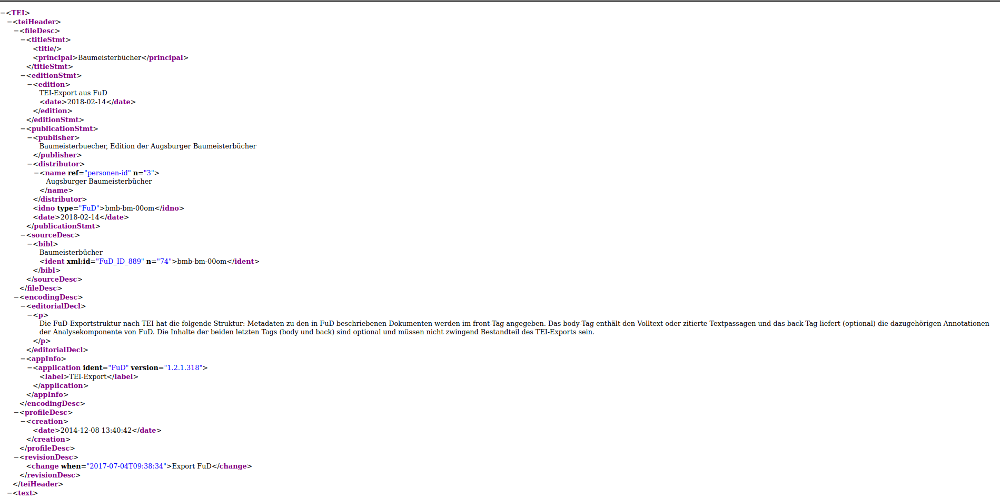
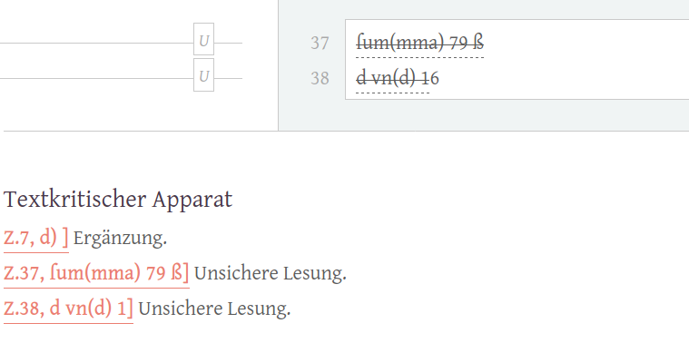
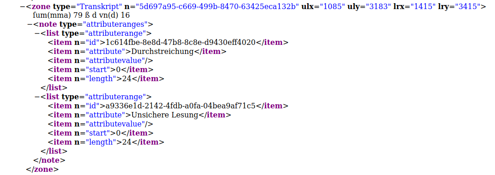
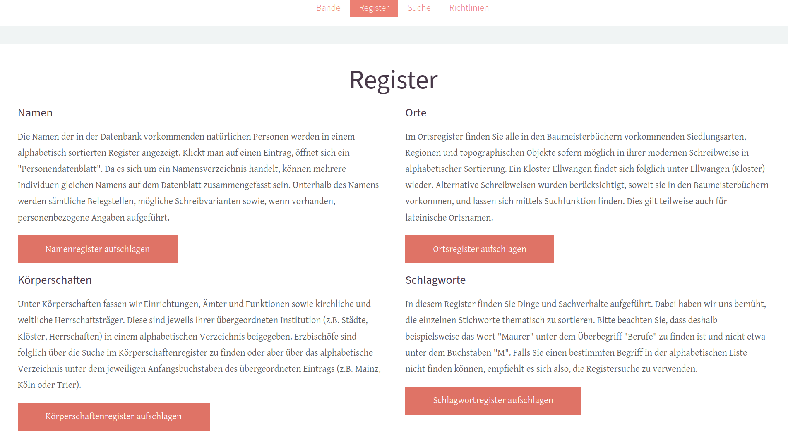
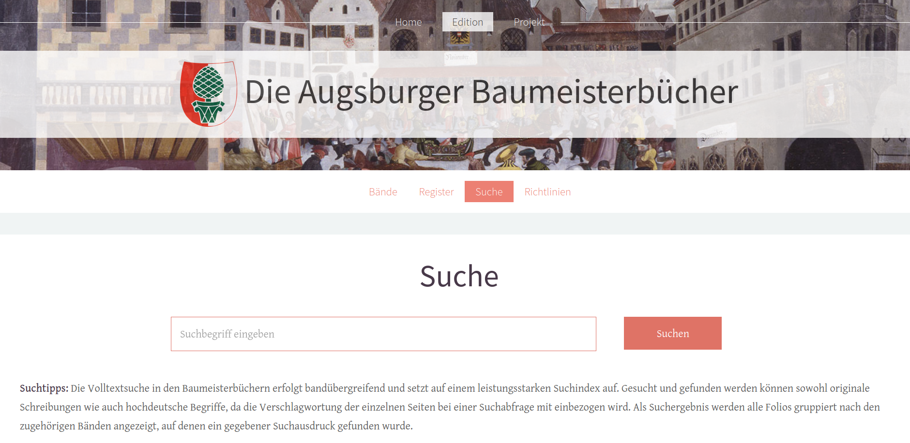
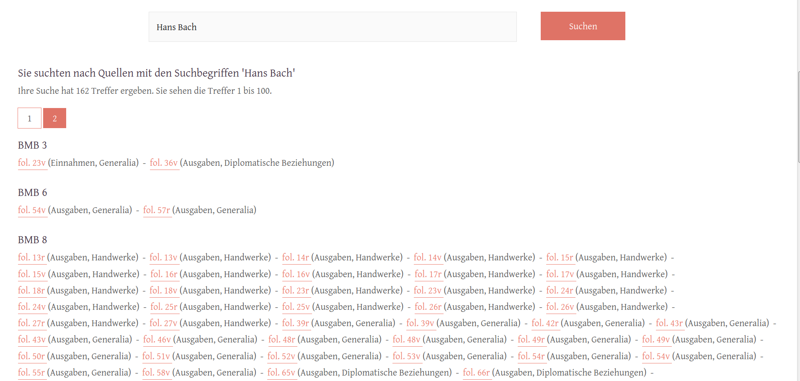
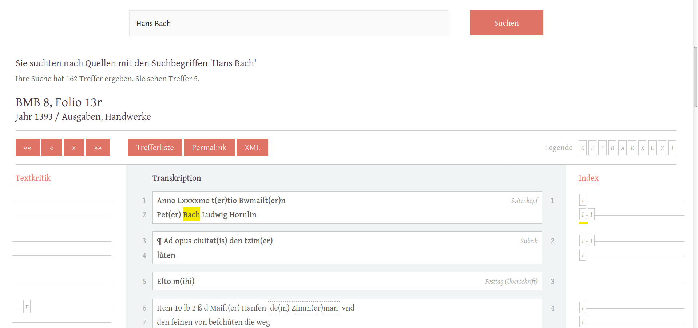

Digitale Edition der Augsburger Baumeisterbücher
Table of Contents
Abstract
This review focuses on the digital edition of the ‘Augsburger Baumeisterbücher’. The primary objective of the project is to make the sources from the period 1320 to 1644 accessible and usable and to provide a comprehensive index. In the following, the review describes the source material, the web presentation and the technical background. It locates the digital edition in the context of the project’s own guidelines as well as in the context of the field of early modern account books as topic of digital editions. While the project fulfils expectations in terms of making the source material accessible for historical questions or linguistic research, it falls short in terms of structuring the data in a machine-readable way and the possibilities of interlinking with other digital projects.
Einleitung
Die als ‚Baumeisterbücher‘ betitelten Stadtrechnungsbücher von Augsburg sind eine wichtige Quelle für die Untersuchung der mittelalterlichen und frühneuzeitlichen Alltags-, Sozial- und Stadtgeschichte. Stadtrechnungsbücher sind in vielen Archiven aufgrund zahlreicher Brände, Kriege und (Natur-)Katastrophen nur lückenhaft überliefert, weshalb dem Augsburger Archivbestand eine große Bedeutung beigemessen werden muss. Der dichte und nahezu lückenlose Bestand, der bis in das 14. Jahrhundert zurückreicht und dadurch Veränderungen und Kontinuitäten besonders gut aufzeigen kann, ist daher auch für verschiedene weitere Fächer und Disziplinen interessant und weit mehr als ein Spiegel der Wirtschafts- und Verwaltungsgeschichte. Auch wenn die Aussagekraft zum Teil regional begrenzt ist, besitzen die Quellen einen hohen Repräsentationsgrad, der nicht zuletzt durch die Schreiber zum Tragen kommt (exemplarisch hierfür: Clemen 2003).
Bei der Digitalen Edition der Augsburger Baumeisterbücher handelt es sich um ein DFG-finanziertes Editionsprojekt, das im Rahmen von zwei Förderphasen, die insgesamt den Zeitraum von 2014 bis 2019 umfassten, durchgeführt wurde. Die Projektumsetzung oblag dem Forschungsschwerpunkt Historische Kulturwissenschaften der Johannes Gutenberg-Universität Mainz unter der Leitung von Prof. Dr. Jörg Rögge. Zu den Kooperationspartnern gehörten das Stadtarchiv Augsburg, die Akademie der Wissenschaften und der Literatur in Mainz, die Digitale Akademie in Mainz sowie die Universitätsbibliothek Mainz und das Trier Center for Digital Humanities.
Gegenstand und Inhalte der Edition
Das Projekt hatte es sich zur Aufgabe gemacht, die Stadtrechnungsbücher der Reichsstadt Augsburg aus dem 14. und 15. Jahrhundert digital zu erfassen und online zugänglich zu machen. Ein erklärtes Ziel des Projektes war es, nicht nur das historische Material zu bearbeiten, sondern „auch einen wesentlichen Beitrag zur Diskussion um die Möglichkeiten, Herausforderungen, Chancen und Grenzen der digitalen Edition mittelalterlicher Rechnungsbücher“ (siehe Giegerich 2017) zu leisten.
Die Auswahl des zu erschließenden Materials mit einem Umfang von 67 Bänden und mehr als 6.000 Blatt erscheint mit der Konzentration auf die Jahre von 1320 bis 1466 durchaus nachvollziehbar, da gerade aus dieser frühen Zeitphase nur selten Quellenbestände in einer derart hohen Dichte überliefert sind und der Gegenstand der Edition somit ein Desiderat darstellt.
Die transkribierten und kommentierten Bände wurden bis 2019 kontinuierlich online gestellt. Der Hinweis zum Bearbeitungsstand der einzelnen Bände auf der Webseite zur Bandauswahl zeigt, dass in der Projektlaufzeit nicht alle Bände fertiggestellt werden konnten. Ob die noch fehlenden Bände ergänzt werden oder derzeit tatsächlich noch eine Bearbeitung erfolgt, konnte jedoch nicht ermittelt werden. Die Bearbeitungsleistung liegt vor allem in der erstmaligen digitalen Erschließung und Zugänglichmachung des Bestandes. In der Transkriptionsarbeit orientierte man sich innerhalb des Projektes an den ‚Richtlinien für Editionen mittelalterlicher Amtsbücher‘ von Walter Heinemeyers (Heinemeyer 2000, 19-25) sowie an verschiedenen Printeditionen, wie zum Beispiel den von Claudine Moulin und Michel Pauly herausgegebenen Rechnungsbüchern der Stadt Luxemburg (Moulin und Pauly 2007-2014) oder der Edition der Butzbacher Stadtrechnungen (Bachmann 2011) für die Jahre 1371 bis 1419. Der Verweis auf das 2015 veröffentlichte Baseler Projekt zu den Jahrrechnungen der Stadt Basel (Burghartz 2015) für die Jahre 1535 bis 1610 zeigt, dass man im Projektverlauf auch andere digitale Editionsprojekte, die frühneuzeitliche Rechnungsbücher zum Gegenstand haben, als Vergleichsebene miteinbezogen hat.
Inhalte
Die Baumeisterbücher werden online in Form von Bänden bzw. einer Bandauswahl bereitgestellt. Die Bandauswahl präsentiert sich in der Desktop-Ansicht in Form einer gut lesbaren, tabellarischen Übersicht, die Auskunft über die Bandnummer, Jahresumfang des Bandes, den darin enthaltenen Baumeistern sowie Angaben zu den Hauptbearbeitenden1 des Bandes. In der letzten Spalte führt der Link ‚Aufschlagen‘ zum Band oder gibt den Bearbeitungsstatus ‚In Arbeit‘ an.
Mit einem Klick auf die Bandnummer oder den Link ‚Aufschlagen‘ gelangen die Betrachter*innen zu der Folioübersicht des Bandes. Mithilfe einer ausführlichen Bandbeschreibung, die eine kurze Übersicht zum Bestand und zur Signatur, eine Buchbeschreibung sowie Angaben zu Bindung, Papier, Tinte, Foliierung, leeren Seiten, Schriftbild und weiteren Besonderheiten enthält, glichen die Projektdurchführenden das Fehlen von digitalen Faksimiles aus. Dennoch bleibt es schade, dass aufgrund der Entscheidung des Stadtarchivs Augsburg2 auf die Einbindung von Faksimiles in die Digitale Edition verzichtet werden musste, da auch hier für weitere Disziplinen weitere Erkenntnisgewinne möglich wären (bspw. Rechnungsbücher als Objekt; Materialität; Schrift und Schriftlichkeit sowie Veränderungen im Schreib- oder Verschriftlichungsprozess).
Die Folioübersicht verhält sich in ihrer Struktur analog zur Bandübersicht. Sie gibt Auskunft über die Folionummer, die Rubriken, das Jahr, die Bearbeiterin, das Datum der letzten Bearbeitung und führt über den Link ‚Aufschlagen‘ zum entsprechenden Folio. Die Übersicht zum einzelnen Folio besteht in der Desktop-Ansicht aus drei Spalten, in denen Textkritik, Transkription und Index auf einen Blick erfasst werden können. Dem transkribierten Text in der mittleren Spalte wird dabei die Hauptaufmerksamkeit geschenkt, während Textkritik und Index jeweils in Marginalien und mit komprimiertem Inhalt angezeigt werden. Für diesen komprimierten Inhalt steht einerseits eine Legende als Hilfestellung zur Verfügung und andererseits die Mouseover-Funktion, sodass bei Bedarf auch eine schnelle Entschlüsselung der jeweiligen Kurzform gegeben ist. Auf mobilen Endgeräten mit kleinerem Display (v.a. Smartphones) wird die dreispaltige Ansicht aufgelöst zu Gunsten einer einspaltigen Transkriptionsansicht, die den strukturierten Lesetext ins Zentrum stellt.
Zur Orientierung werden in der Transkriptionsspalte die Zeilen am linken und die einzelnen Rechnungseinträge am rechten Rand durchnummeriert. Hinter der Nummerierung sind Permalinks hinterlegt, mit denen sich sowohl einzelne Rechnungseinträge als auch einzelne Zeilen in Rechnungseinträgen stabil verlinken und zitieren lassen.
Zusätzlich sorgt eine Funktionsleiste, die sich über den Spalten Textkritik, Transkription und Index befindet, für Orientierung und bietet weitere Bedienelemente an. So lässt sich über die einfache Blätterfunktion, die über der Textkritikspalte angeordnet ist, zur nächsten Seite ‚umblättern‘ oder direkt zum Anfang oder Ende des ausgewählten Bandes navigieren. Neben den Bedienelementen zum Vor- und Zurückblättern befinden sich oberhalb der mittleren Transkriptionsspalte drei weitere Schaltflächen: Folios, Permalink und XML. Während die Schaltfläche ‚Folios‘ zurück zur Folioübersicht führt, ist die Schaltfläche ‚Permalink‘ nicht sehr benutzerfreundlich angelegt, da diese zum Neuladen der Seite führt. Über den Umweg des Aufrufens des jeweiligen Browser-Kontextmenüs und ‚Link kopieren‘ kann dann jedoch der Permalink genutzt werden. Die Schaltfläche ‚XML‘ ruft im Browserfenster die XML-Datei zum entsprechenden Folio auf, die dann gespeichert werden kann. Laut den Ausführungen zu den Richtlinien3 des Projektes befindet sich diese Funktion noch im Aufbau und soll hinsichtlich ihrer TEI-Konformität noch optimiert werden. Ob hierfür ein konkretes Zeitfenster vorgesehen ist, kann aus den Angaben und den Meldungen zum Projekt leider nicht entnommen werden.
Des Weiteren wird ein umfangreiches Register zu Namen, Orten, Körperschaften und Schlagworten angeboten. Das Namensregister enthält neben dem Namen weitere Informationen zur Person sowie die Folioangaben zu den Baumeisterbuch-Bänden, in denen der jeweilige Name genannt wird. Die Orts-, Körperschafts- und Schlagwortregister verhalten sich analog dazu und können zusätzlich über die Suchfunktion durchsucht werden.
Geschmälert wird die Registerfunktion dadurch, dass zum einen im Register nicht der unmittelbare Kontext aus der Quelle eingeblendet wird und zum anderen weder die Personen noch die Orte durch Normdaten (GND, TGN, Wikidata o. ä.) angereichert wurden. Hier verfehlt das Register – auch durch den Verzicht auf Permalinks – etablierte Standards und erschwert eine Nachnutzung der Daten bzw. eine weitere Nutzung der Digitalen Edition innerhalb der Digital oder Computational Humanities.
Transkription und TEI
Unter der Rubrik ‚Richtlinien‘ des Editionsprojektes werden die Ziele und das Vorgehen definiert und auch Angaben zum Aufbau der Digitalen Edition gemacht. Für die Realisierung des Editionsvorhabens wurde das Forschungsnetzwerk und Datenbanksystem ‚FuD‘ (Universität Trier Servicezentrum eSciences 2021) zur Erfassung, Kommentierung und Analyse der Baumeisterbücher verwendet. Zusätzlich wurde zur Anreicherung des Textes mit Metadaten das Transkriptionstool ‚Transcribo‘ (Trier CDH 2014-2021) genutzt.4
Laut den projekteigenen Richtlinien wurde der Aufbau mitwachsender Indices ebenso wie die Plattformunabhängigkeit der Textdarstellung und der Inhalte durch die Verwendung der TEI-Richtlinien (TEI Consortium 2021) ebenso zum Ziel erklärt wie die Vernetzung mit anderen online verfügbaren Projekten.5 Während, wie im Folgenden noch ausführlicher dargestellt wird, die TEI-Richtlinien in nur sehr geringem Umfang angewandt wurden, scheint nach Betrachtung der Webpräsenz auch die Vernetzung mit anderen Editionsprojekten nicht erfolgt zu sein. Auch scheinen keine anderen Aktualisierungen nach dem Laufzeitende des Projektes im Mai 20196 durchgeführt worden zu sein.
Während in den Richtlinien die generellen editorischen Entscheidungen im Hinblick auf Streichungen und Ergänzungen, Graphien, Normalisierungen und unsichere Lesungen erläutert werden, fehlt die entsprechende Vorgehensweise und Dokumentation für die XML-Dateien. Das Fehlen dieser – für eine Digitale Edition durchaus wichtigen – Angaben zeigt den Nachteil der Arbeits-, Publikations- und Archivplattform FuD, die sich an Geisteswisschaftler*innen ohne XML-Kenntnisse richtet. Auch wenn die niedrige Einstiegshürde sowie die Förderung einer kollaborativen Zusammenarbeit den Einsatz von FuD durchaus rechtfertigen, zeigt sich beispielsweise in Band 3 der Baumeisterbücher in Folio 2r, dass eine Nachbearbeitung der XML-Dateien entsprechend der TEI-Richtlinien notwendig gewesen wäre.7 An verschiedenen Stellen der Edition erscheinen Rendering-Fehler, die bei nativer und konsequenter Anwendung der TEI-Richtlinien und Rendering-Regeln hätten vermieden werden können. Eine Nachbearbeitung der XML-Dateien wäre daher dringend notwendig, um zum einen eine Vernetzung mit anderen Online-Projekten bzw. Digitalen Editionen auch nach dem Ende der Projektlaufzeit zu erleichtern und zum anderen, um die Nachnutzbarkeit und Interoperabilität der Daten zu fördern.
<persName>, <funder>,
<orgName> bieten würden, werden an dieser Stelle nicht
ausgeschöpft, sodass eine Verbesserung editionsphilologischer Methoden auf der
digitalen Ebene leider ausbleibt.
Deutlich wird dies auch in dem ausschließlich im weiblichen Genus
formulierten und definierten <label>Bearbeiterin</label>,
statt einer beispielsweise genderneutralen Variante, wie sie durch die TEI-Elemente
<persName> sowie der weiteren Unterteilung in
<surname>, <forename>,
<email> in der XML-Datei nutzbar gewesen wäre, um auch
innerhalb der XML-Dateien eine Dokumentation im Umgang mit dem Quellenbestand
erreichen zu können.
 <item n="attribute">Unsichere
Lesung</item> zum Ausdruck gebracht.
Die Struktur der XML-Datei irritiert an vielen Stellen und zeigt auf,
wie notwendig vorhergehende Überlegungen zur Modellierung sind, um aus den
TEI-Richtlinien die für das jeweilige Editionsprojekt notwendigen Elemente und
Strukturen abzuleiten, im XML-Schema anzulegen und entsprechend zu nutzen. So bleibt
beispielsweise unverständlich, warum die Metadaten zur Edition im
<front>-Bereich kodiert wurden oder die Verbindung zwischen
Text- und Faksimilebereich über <note>-Elemente erfolgte.

Technischer Hintergrund und Präsentation
Die Webpräsenz umfasst die Digitale Edition und das Forschungsprojekt. Alle Informationen sind leicht auffindbar und klar strukturiert. Durch das responsive Webdesign ist die Seite sowohl am Desktop als auch auf mobilen Endgeräten einfach zu bedienen. Der technische Hintergrund basiert – wie bereits oben erwähnt – auf der virtuellen Forschungsumgebung FuD, die sich explizit an Geistes- und Sozialwissenschaftler*innen richtet. Bei der Präsentation der Edition orientierten sich die Projektdurchführenden daher ebenfalls in erster Linie an den Bedürfnissen der Nutzer*innen aus diesen Bereichen und deren potenziellen Fragestellungen. Sie entwickelten gemeinsam mit der Digitalen Akademie der Mainzer Akademie der Wissenschaften und der Literatur ein Online-Framework, das diesen Ansprüchen Rechnung tragen sollte.8 Als Content Management System wurde Typo3 genutzt.
Das Design der Seite besticht durch seine Übersichtlichkeit und durch eine thematisch passende Hintergrundgrafik, die einen Ausschnitt des Bildes ‚Augsburger Monatsbild: Oktober, November, Dezember‘ des Malers Jörg Breu (der Ältere) von 1475 zeigt. Aufgrund des gleichbleibenden Headers auf den (Unter-)Seiten der Webpräsenz, bestehend aus dem Projekttitel und dem Augsburger Stadtwappen, ist die Website insgesamt nachvollziehbar aufgebaut. Der weitere Seitenaufbau folgt den derzeit gängigen User-Interface-Designrichtlinien und verzichtet auf ausklappbare Menüs per Mouseover-Funktion, was der Nutzerfreundlichkeit zugutekommt.
 

Lizenz & Verfügbarkeit
Die Edition steht inklusive der Forschungsdaten unter der CC-BY-4.0-Lizenz9, sodass sowohl das Teilen als auch das Bearbeiten unter der Namensnennung des Lizenzgebers in angemessener Weise ermöglicht wird. Diese Art der Lizenzierung ist durchaus erfreulich, da hierdurch eine Weiterentwicklung und Nachnutzung der Digitalen Edition durch Dritte erfolgen kann.
Fazit
Obwohl historische Rechnungsdokumente auf den ersten Blick für die computergestützte Reproduktion hervorragend geeignet zu sein scheinen (Vogeler 2015), wurden sie bislang nur in wenigen Fällen (bspw. das Baseler Projekt zu den Jahrrechnungen der Stadt Basel oder das Grazer Projekt zum Steierischen Marchfutterurbar von 1414/1426) digital erschlossen und ediert. Aufgrund dessen ist der von den projektdurchführenden Akteur*innen formulierte Anspruch auf die digitale Zugänglichmachung dieses umfangreichen Quellenbestandes positiv zu bewerten.
Allerdings ist es dem Projekt nur bedingt gelungen, eine „maschinenlesbare Strukturierung der Daten, […] Indices und Volltexte“ vorzunehmen, die eine „Erforschung der Bestände mit Methoden der Digital Humanities ermöglicht“10, wie es das formulierte Ziel des Projektes gewesen ist. Damit wurde auch die Chance verpasst, Entwicklungen in diesem Bereich, wie sie beispielsweise in der Edition der Rechnungsbücher des Royal Irish College of Saint George the Martyr in Alcalá bereits 2008 vorgeführt wurden, aufzugreifen und kritisch weiterzuentwickeln (National University of Ireland 2008). So bleiben leider auch die Anregungen von Georg Vogeler aus dem Jahr 2015 zur Modellierung mittelalterlicher und frühneuzeitlicher Rechnungsbücher unbeachtet, die darauf hinweisen, dass das von der Philologie dominierte Modell kritischer digitaler Editionen nicht genügt, um frühneuzeitliche Rechnungen auch als Informationsquelle für die Sprachgeschichte und für ökonomische Untersuchungen aufzubereiten (Vogeler 2015). Insofern genügt diese Edition den Ansprüchen einer gedruckten Ausgabe, nicht jedoch zwingend denen einer Digitalen Edition, für die zusätzliche Anforderungen gelten können. Zudem ist die Nachnutzbarkeit durch den Verzicht auf die Verwendung von Normdaten und die Qualität der XML-Dateien zusätzlich erschwert. Wünschenswert wäre die Schaffung von Möglichkeiten zur quantitativen Analyse der Rechnungsbücher gewesen, wodurch die Rechnungseinträge im Quellenmaterial gezielt hätten genutzt und exportiert werden können.
Grundsätzlich zeigt sich der große Mehrwert der Edition in der Zugänglichmachung und Transkription des Quellenbestandes, der nicht nur den Zugang zum Material erleichtert, sondern auch die Kenntnis über diese Quellen und über die in ihnen enthaltenen Informationen einer breiteren (deutschsprachigen) Öffentlichkeit bekannt macht. Das Interesse an den Augsburger Rechnungsbüchern sowie mögliche weitere Fragestellungen zeigt die Untersuchung von Janina Lea Gutmann auf, die sich dem Zusammenhang von Notationsform und Informationsgehalt in den Augsburger Baumeisterbüchern des 15. Jahrhunderts widmete (Gutmann 2020). Zugleich zeigt ihre Untersuchung aber auch die Notwendigkeit von digitalen Faksimiles auf, ohne die Gutmanns Arbeit nicht möglich gewesen wäre.
Bibliography
- Bachmann, Bodo. 2011. Die Butzbacher Stadtrechnungen im Spätmittelalter 1371-1419. Bd. 1: Kommentar & Index; Bd. 2: Edition, Marburg (Quellen und Forschungen zur hessischen Geschichte 160, 1 und 2).
- Burghartz, Susanna, Hg. 2015. Jahrrechnungen der Stadt Basel 1535-1610 – digitale Edition, Basel/Graz 2015. https://web.archive.org/web/20210106124214/http://gams.uni-graz.at/context:srbas.
- Clemen, Gudrun. 2003. Stadtrechnungen als Quelle zu Alltags- und Sozialgeschichte: Schmalkalden im 16. Jahrhundert, Universität Siegen. https://web.archive.org//web/20210106122845/https://dspace.ub.uni-siegen.de/bitstream/ubsi/245/1/clemen.pdf.
- Giegerich, Petra. 2017. Pressemitteilung zur Bewilligung der zweiten Förderphase der digitalen Edition der Augsburger Baumeisterbücher, 30.08.2017. https://web.archive.org//web/20210106123407/https://idw-online.de/de/news680145.
- Gutmann, Janina Lea. 2020. Zum Zusammenhang von Notationsform und Informationsgehalt in den Augsburger Baumeisterbüchern des 15. Jahrhunderts. https://mittelalter.hypotheses.org/23551 (veröffentlicht: 06.01.2020, aktualisiert: 06.04.2020).
- Heinemeyer, Walter. 2000. „Richtlinien für die Edition mittelalterlicher Amtsbücher.“ In: Richtlinien für Editionen landesgeschichtlicher Quellen, herausgegeben von Walter Heinemeyer. Marburg: Selbstverlag des Gesamtvereins der deutschen Geschichts- und Altertumsvereine.
- Moulin, Claudine und Michel Pauly, eds. Die Rechnungsbücher der Stadt Luxemburg, Bd. 1: 1388-1399, Luxemburg 2007; Bd. 2: 1400-1430, Luxemburg 2008; Bd. 3: 1444-1453, Luxemburg 2009; Bd. 4: 1453-1460, Luxemburg 2010; Bd. 5: 1460-1466, Luxemburg 2010; Bd. 6: 1467-1473, Luxemburg 2012; Bd. 7: 1475-1478, Luxemburg 2013; Bd. 8: 1478-1480, Luxemburg 2014 (Schriftenreihe des Stadtarchivs Luxemburg 1-8; Publications du CLUDEM 20, 21, 29, 31, 32, 33, 39, 40).
- National University of Ireland. 2008. The Alcalá Account Book Project. Royal Irish College of Saint George the Martyr in Alcalá (1649-1785). http://web.archive.org/web/20120817120407/http://archives.forasfeasa.ie//.
- Perstling, Matthias. 2013. Multimediale Dokumentation und Edition mehrschichtiger Texte: Das steierische-landesfürstliche Marchfutterurbar von 1414/1426, Universität Graz. https://unipub.uni-graz.at/obvugrhs/content/titleinfo/226719.
- TEI Consortium. 2021. TEI P5: Guidelines for Electronic Text Encoding and Interchange. 4.2.2. https://web.archive.org/web/20210607171428/https://tei-c.org/release/doc/tei-p5-doc/de.
- Trier Center for Digital Humanities: Transcribo, 2014-2021. https://web.archive.org/web/20181227211103/http://transcribo.org/.
- Universität Trier Servicezentrum eSciences. 2021. FuD. Die virtuelle Forschungsumgebung für die Geistes- und Sozialwissenschaften. Release-Version 3.1, April 2021. https://web.archive.org/web/https://fud.uni-trier.de/demo-anfrage/.
- Vogeler, Georg. 2015. „Warum werden mittelalterliche und frühneuzeitliche Rechnungsbücher eigentlich nicht digital ediert?“ In: Grenzen und Möglichkeiten der Digital Humanities, herausgegeben von Constanze Baum und Thomas Stäcker. (=Sonderband der Zeitschrift für digitale Geisteswissenschaften, 1). https://doi.org/10.17175/sb001_007.
Notes
- Ohne weitere Anmerkung oder eines Kommentars wird auf der Webpräsenz des Editionsprojekts ausschließlich die weibliche Form verwendet, obwohl auch männliche Hauptbearbeiter im Projekt tätig waren. Dies irritiert zunächst, könnte aber ebenso als Gegenbewegung zur sonst als ‚Normalform‘ deklarierten ausschließlichen Verwendung der männlichen Form verstanden werden, bei der Frauen häufig generös ‚mitgemeint‘ werden. ↑
- Siehe: Grußwort des Herausgebers: https://web.archive.org/web/20210106125327/https://www.augsburger-baumeisterbuecher.de/. ↑
- Siehe: Richtlinien des Projekts: https://web.archive.org/web/20210106133957/https://www.augsburger-baumeisterbuecher.de/edition/richtlinien.html. ↑
- Siehe: Richtlinien der Edition: https://web.archive.org/web/20210106133957/https://www.augsburger-baumeisterbuecher.de/edition/richtlinien.html. ↑
- Siehe: Richtlinien der Edition: https://web.archive.org/web/20210106133957/https://www.augsburger-baumeisterbuecher.de/edition/richtlinien.html. ↑
- Der letzte Eintrag im Nachrichtenarchiv des Projektes ist auf den 1. Mai 2019 datiert. Siehe: https://web.archive.org/web/20210607171018/https://www.augsburger-baumeisterbuecher.de/projekt/aktuelles/artikel/neue-bmb-baende-publiziert.html. ↑
- Siehe: https://lod.academy/bmb/id/bmb-bm-00om/1, Zeile 25. ↑
- Siehe: Ausführungen zum Online-Framework, unter Richtlinien: https://web.archive.org/web/20210106133957/https://www.augsburger-baumeisterbuecher.de/edition/richtlinien.html. ↑
- Siehe: Nutzungshinweise im Rahmen des Zitiervorschlags des jeweiligen Folios. ↑
- Siehe: Richtlinien des Projekts: https://web.archive.org/web/20210106133957/https://www.augsburger-baumeisterbuecher.de/edition/richtlinien.html. ↑
@article{baumeisterbuecher,
author = {Klemstein, Franziska},
title = {Digitale Edition der Augsburger Baumeisterbücher},
journal = {RIDE – A review journal for digital editions and resources},
number = {14},
year = {2021},
doi = {10.18716/ride.a.14.3},
url = {https://doi.org/10.18716/ride.a.14.3},
}TY - JOUR
AU - Klemstein, Franziska
TI - Digitale Edition der Augsburger Baumeisterbücher
T2 - RIDE – A review journal for digital editions and resources
IS - 14
PY - 2021
DA - 2021/11
DO - 10.18716/ride.a.14.3
UR - https://doi.org/10.18716/ride.a.14.3
PB - Institut für Dokumentologie und Editorik e.V.
LA - de
ER - Klemstein, F. (2021). Digitale Edition der Augsburger Baumeisterbücher. RIDE – A review journal for digital editions and resources, (14). https://doi.org/10.18716/ride.a.14.3Klemstein, Franziska. "Digitale Edition der Augsburger Baumeisterbücher." RIDE – A review journal for digital editions and resources, no. 14, 2021. https://doi.org/10.18716/ride.a.14.3.Klemstein, Franziska. "Digitale Edition der Augsburger Baumeisterbücher." RIDE – A review journal for digital editions and resources, no. 14 (2021). https://doi.org/10.18716/ride.a.14.3.